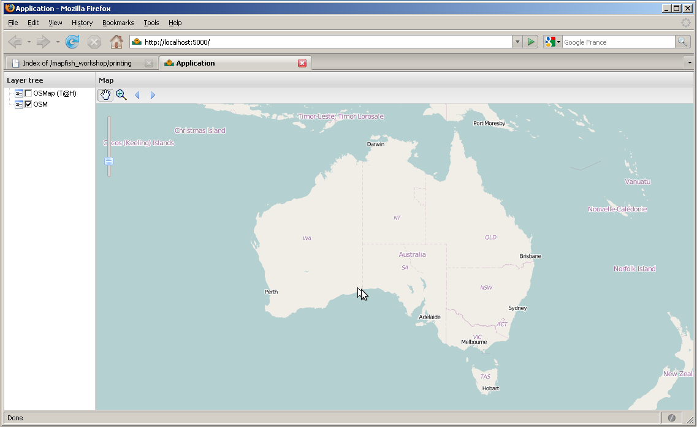

Table Of Contents
Previous topic
Next topic
Module 3 – Personnalisation de l’Application
Module 3 – Personnalisation de l’Application
Au sein de ce module vous apprendrez à créer une application MapFish. Vous en étudierez sa structure ainsi que le code et la structure MapFish généré lors de la création de l’application.
Pour concevoir l’application MapFish utilisez :
$ paster create -t mapfish MapFishApp
MapFishApp est le nom de l’application Mapfish en cours d’installation, vous pouvez bien évidemment modifier son nom à votre convenance. Nous assumons que vous avez choisi MapFishApp dans le reste de ce document.
Lorsque le programme vous demande quel template doit être employé, choisissez la valeur par défaut mako. Lorsqu’on vous demande si la cojfiguration de SQLAlchemy 0.6 doit être incluse, répondez True, puisque vous application MapFish incluera des services web se basant sur une base de données.
Vous devez maintenant avoir un dossier nommé MapFishApp. Ce dernier contient les fichiers de votre application, principalement des fichiers Python à ce stade de l’installation.
L’heure est venue de vérifier que l’application MapFish fonctionne correctement. Pour cela, dirigez vous au sein du répertoire MapFishApp et lancez l’application :
$ cd MapFishApp
$ paster serve development.ini
Cette ligne de commande lance l’application dans le serveur web Paster, couramment employé par les développements employant le langage Python.
Ouvrez maintenant l’adresse suivante http://localhost:5000 au sein de votre navigateur web, vous devriez être dirigés vers la page par défaut suivante :

Vous allez maintenant installer la boite à outils Javascript au sein de votre application. Celle ci comprend :
Ext, OpenLayers, GeoExt ainsi que la librairie JavaScript de MapFish,
un échantillon d’application JavaScript basée sur ces librairies,
échantillon d’application,
un framework de test JavaScript, avec un exemple de test
Entrez Ctrl+C pour stopper le serveur Paster puis continuez avec ces deux lignes de commandes :
Lorsque le programme vous demande de remplacer index.html répondez y. Cette commande écrasera la page index.html aperçue dans la section précédente par celle proposée par l’échantillon mapfish_client.
Redémarrez l’application :
$ cd MapFishApp
$ paster serve --reload development.ini
Note
Notez l’utilité de la commande --reload . Celle ci permet au serveur Paster de contrôler l’ensemble des modules Python utilisés par l’application MapFishApp et de se recharger automatiquement lorsqu’un des modules est modifié ou lorsque de nouveaux sont créés. Cette particularité est très utile lors du développement.
Ouvrez ou rechargez http://localhost:5000 au sein de votre navigateur, vous devriez maintenant obtenir l’interface utilisateur par défaut que voici :
Cette interface par défaut est composée d’une carte, d’une boîte à outils au dessus de celle-ci avec les commande nécessaires à l’utilisation de la carte, et finalement de l’arborescence des couches permettant de contrôler la visibilité des différentes informations géographiques à disposition. La carte en elle-même est composée de deux couches de bases OpenStreetMap (Mapnik et Tiles@Home).
L’interface utilisateur par défaut est mise à disposition du développeur de l’application comme exemple. Ce dernier est libre de développer à partir de cet échantillon ou bien de le supprimer et le remplacer par un autre.
Comme mentionné au début de ce chapitre, la boite à outils JavaScript installée au sein de l’application MapFish est livrée avec un Framework de test JavaScript. Nous voyons clairement ci que l’‘un des objectifs de MapFish est ici de libérer le développeur des tâches fastidieuses et ainsi le rendre plus productif dans le développement d’un code de haute qualité, stable et testé. Un exemple de test vous est proposé, pour l’exécuter chargez http://localhost:5000/tests dans votre navigateur.
La sous-partie suivante vous donnera un aperçu d’ensemble des différents dossiers et fichiers de votre application MapFish. Prenez le temps de parcourir ce répertoire afin vous donner une idée sur la structuration de l’application.
Le dossier principal de l’application, MapFishApp, contient :
mapfishapp
Il s’agit du dossier principal de l’application, son nom dépend de celui donné à l’application et donc de l’argument donné lors de l’utilisation de la commande paster create. Les sous-dossiers les plus important du répertoire sont: controllers, model, lib, config, tests, templates, and public.
- controllers
- Le dossier controllers contient les contrôleurs de l’application. Les contrôleurs sont les composants qui gèrent les requêtes HTTP et envoient les réponses http. Ils interagissent souvent avec le code présent dans les dossiers suivants model et templates.
- model
- Le dossier model comprend les éléments de définition et de configuration de la base données. C’est ici que les différentes tables et relations sont définies.
- lib
- Le dossier lib comprend le code Python partagé par les différents contrôleurs, ainsi que le tiers du code.
- config
- Le dossier config comprend le code Python généré par le Framework et celui nécessaire à l’optimisation de l’application.
- tests
- Le dossier tests vous permet d’intégrer vos propres test Python afin de contrôler automatiquement votre application.
- templates
- Le dossier templates vous permet de visualiser les différents modèles enregistrés. Le rendu HTML étant surtout élaboré côté client, nous n’allons pas écrire de modèles dans le cadre de cet atelier.
public
Le dossier public comprend les fichiers dits statiques de l’application comme par exemple les fichiers de type HTML, CSS, JavaScript, etc. La plupart des éléments de ce dossier ont étés générés lors de l’installation de la boite à outils JavaScript via le paster create –tmapfish_client. Les principaux éléments de ce dossier sont les fichiers et ou dossiers index.html, mfbase, app, et tests.
- index.html
- Le fichier index.html correspond à la page d’accueil HTML de l’utilisateur. C’est dans ce dernier que le code JavaScript est chargé.
- lib
- Le dossier lib contient les librairies de la boite à outils JavaScript de MapFish, respectivement nommées Ext, OpenLayers, GeoExt ainsi que le Client MapFish.
- app
- Le dossier app contient les fichiers spécifiques à l’application. Son sous dossier nommé js/App comprend le code JavaScript de l’interface utilisateur par défaut.
- tests
- Le dossier tests permet au développeur de l’application de déposer ces tests JavaScripts. Ce dossier comprend aussi le Framework de test JavaScript, Test.AnotherWay [1], ainsi qu’un exemple de test.
Parcourons maintenant les fichiers prenant part à la construction de l’interface utilisateur (i.e. la page web avec les couches OSM).
Editez le fichier index.html et portez votre attention sur ces quelques lignes :
<script type="text/javascript" src="lib/ext/Ext/adapter/ext/ext-base.js"></script>
<script type="text/javascript" src="lib/ext/Ext/ext-all-debug.js"></script>
<script type="text/javascript" src="lib/openlayers/lib/OpenLayers.js"></script>
<script type="text/javascript" src="lib/geoext/lib/GeoExt.js"></script>
Ces balises <script> activent les librairies JavaScript d’ExtJS, d’OpenLayers, de GeoExt lorsque la page web est ouverte par le navigateur. Ce sont des versions de librairies où le code JavaScripts n’est pas minimisé. Nous parlerons de l’optimisation et de la minification du code JavaScript dans le module Construction de scripts JavaScript.
Les lignes :
<script type="text/javascript" src="app/lib/App/layout.js"></script>
<script type="text/javascript" src="app/lib/App/main.js"></script>
du fichier index.html prennent en charge le chargement du code JavaScript spécifique à l’application. Comme vous avez pu le constater, le code JavaScript de l’interface utilisateur par défaut est composé de deux fichiers. Le développeur est cependant libre d’implémenter de nouveau fichiers si nécessaires.
Le fichier main.js représente le point d’entrée.
/*
* @include App/layout.js
*/
Ext.namespace("App");
(function() {
// global settings
OpenLayers.ImgPath = "lib/openlayers/img";
Ext.QuickTips.init();
// run App.layout.init() when the page
// is ready
Ext.onReady(function() {
App.layout.init()
});
})();
Le fichier vient juste de créer le namespace de l’application, et d’enregistrer un callback devant être exécuté lorsque la page HTML et ses composants sont entièrement chargés. Le callback est enregistré en utilisant la fonction Ext.onReady ; nous déduisons à partir du namespace de la fonction que la fonction est mise à disposition par la librairie Ext. Utiliser Ext.onReady est commun d’une application basée sur la librairie Ext.
Le fichier layout.js est l’emplacement où la composition est définie. Ce fichier contient des fonctions privées, ex. une fonction qui ne peut être appelée depuis un environnement extérieur au module App.layout, et de la fonction publique init, qui est une fonction elle même passée par la fonction Ext.onReady.
Reprenons ce que les fonctions du module layout font.
Cette fonction initie, en les appelant, les fonctions createMap, createLayers, et createLayerStore afin de créer la carte, ses couches ainsi que le layer store.
Elle crée ensuite un composant graphique Ext.Viewport, représentant la fenêtre du navigateur. Cette dernière contient d’autres composants graphiques: ses items. La fenêtre contient deux éléments, une carte ainsi qu’une arborescence des couches. Pour plus de détail regardez le document suivant <http://www.extjs.com/deploy/ext-2.2.1/docs/?class=Ext.Viewport>`_ [4].
Le Map Panel, objet de type GeoExt, est configurée avec les objets map et layer store. Il contient la barre de zoom ainsi qu’une barre d’outils dont les éléments sont retournés par la fonction createTbarItems. Pour plus de détail regardez le document suivant GeoExt.MapPanel doc [5].
L’arborescence des couches est conforme au Ext.tree.TreePanel avec un GeoExt.tree.LayerContainer original. Pour plus de détail regardez les documents suivants Ext.tree.TreePanel [6], and the GeoExt.tree.LayerContainer doc [7].
| [1] | http://www.openjsan.org/doc/a/ar/artemkhodush/ |
| [2] | http://dev.openlayers.org/apidocs/files/OpenLayers/Map-js.html |
| [3] | http://www.geoext.org/lib/GeoExt/data/LayerStore.html |
| [4] | http://www.extjs.com/deploy/ext-2.2.1/docs/?class=Ext.Viewport |
| [5] | http://www.geoext.org/lib/GeoExt/widgets/MapPanel.html |
| [6] | http://www.extjs.com/deploy/ext-2.2.1/docs/?class=Ext.tree.TreePanel |
| [7] | http://www.geoext.org/lib/GeoExt/widgets/tree/LayerContainer.html |